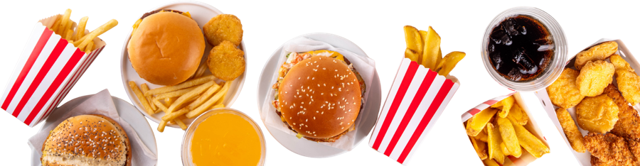

ร้านอาหารคลองหก
ค้นหาด้วยชื่อร้าน ชื่อเมนู หรือชื่อซอย
ค้นหา

ประเภทอาหาร
พื้นที่
เปิดอยู่ตอนนี้
งบต่อมื้อ
ไม่จำกัด
ไม่เกิน 50 บาท
ไม่เกิน 80 บาท
ไม่เกิน 120 บาท
ร้านอาหาร
ล้างตัวกรอง
เรียงตาม
สุ่ม (ทุกร้านเท่าเทียม)
ชื่อร้าน ก-ฮ
ราคาน้อย → มาก
ร้านที่เปิดอยู่ก่อน